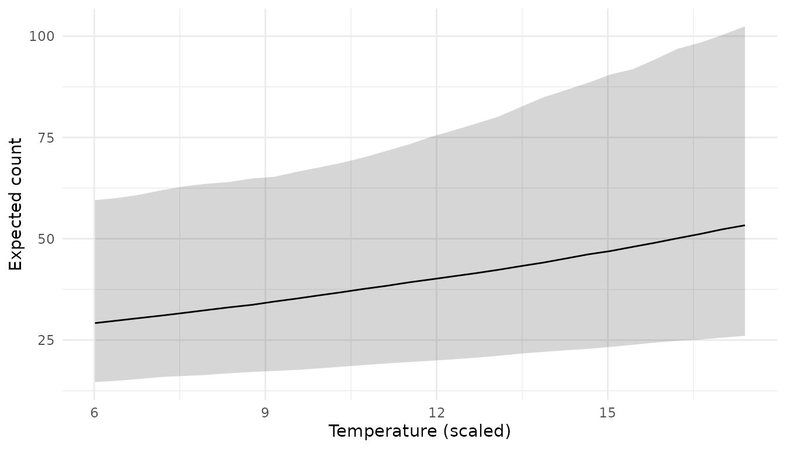
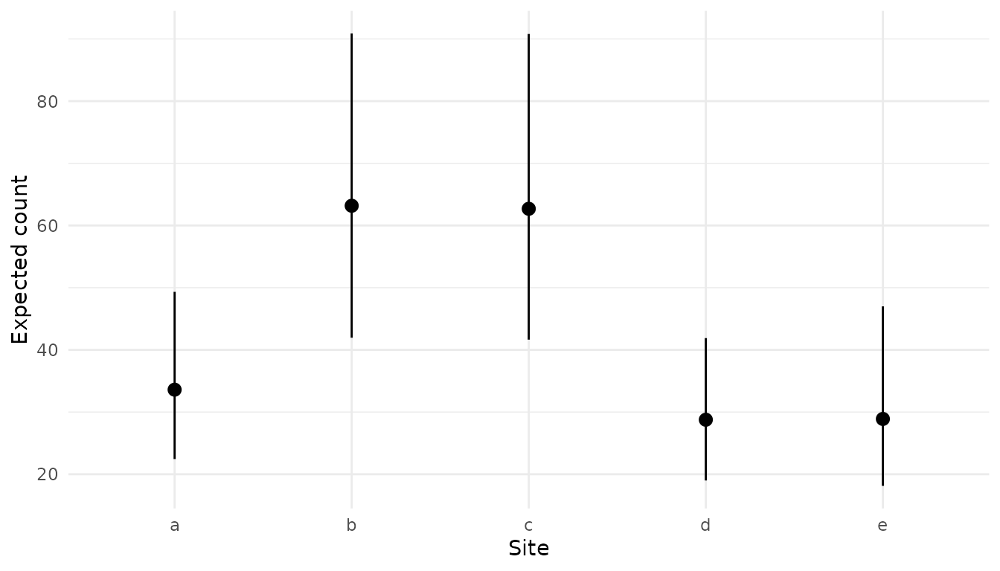
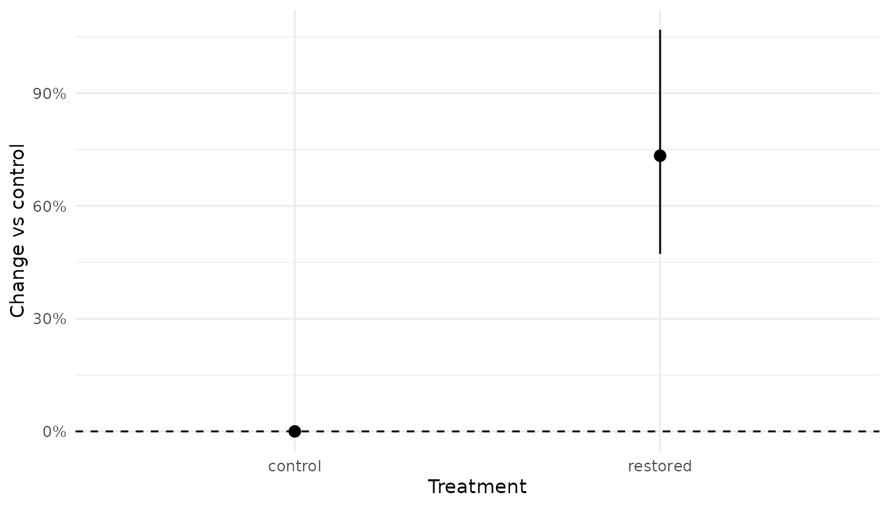
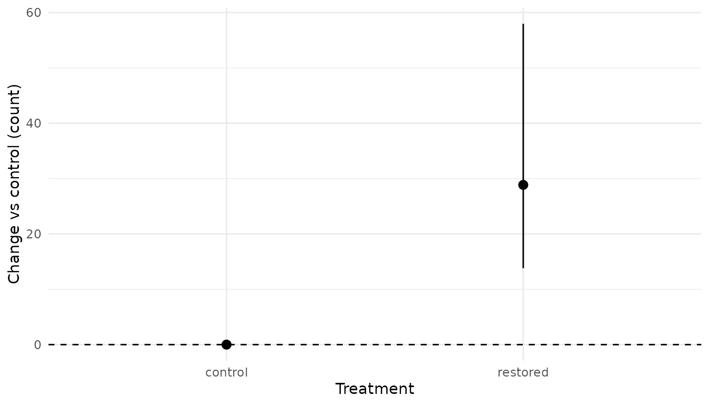
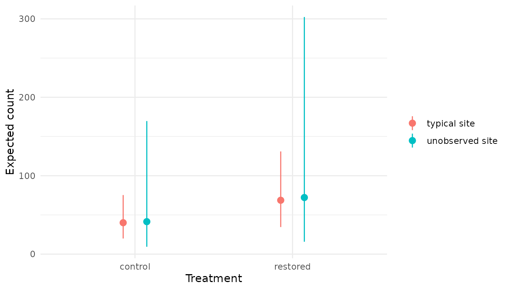

Prediction with predict() and Related Functions
Source:vignettes/articles/prediction.Rmd
prediction.Rmdpredict.mb_analysis() summarizes the posterior
predictive distribution of a fitted Bayesian model at new covariate
values, returning a tidy data frame with point estimates and
compatibility limits. This vignette covers:
-
Covariate
grids built with the
newdatahelpers. -
Scalar quantities from
new_expr. - Random-effect zeroing control.
- Reference data and effect sizes, e.g., for proportional change.
- Predicting for an unobserved level to include amongst-level variation.
-
Overriding
new_exprand injecting constants for ad-hoc derived quantities. -
Group-level
summaries with
mcmc_derive_data(). -
Combining
across analyses with
combine_samples()for joining and summarizing samples from independent fits. -
Scalar derived
quantities with
mcmc_derive()and arithmetic on rawmcmcrposteriors. - Cheat sheet mapping common goals to tools.
library(embr)
library(smbr2)
library(newdata)
library(mcmcr)
library(mcmcderive)
library(dplyr)
library(ggplot2)Setup: fit demo model
A simple example fish count model is fit with Stan (via cmdstanr and smbr2). The simulated data has 5 sites × 5 years × 2 treatments, with an unbalanced design (i.e., not all sites have all years with data).
count_code <- "
data {
int<lower=2> nObs;
int<lower=1> nsite;
int<lower=1> nannual;
int<lower=1> ntreatment;
array[nObs] int<lower=1> site;
array[nObs] int<lower=1> annual;
array[nObs] int<lower=1> treatment;
vector[nObs] temperature;
array[nObs] int<lower=0> count;
}
parameters {
real bIntercept;
vector[ntreatment - 1] bTreatment_dev;
real bTemp;
real<lower=0> sSite;
real<lower=0> sAnnual;
real<lower=0> bPhi;
vector[nsite] z_bSite;
vector[nannual] z_bAnnual;
}
model {
vector[nsite] bSite = z_bSite * sSite;
vector[nannual] bAnnual = z_bAnnual * sAnnual;
vector[ntreatment] bTreatment;
bTreatment[1] = 0;
for (k in 2:ntreatment) bTreatment[k] = bTreatment_dev[k - 1];
vector[nObs] log_eCount;
for (i in 1:nObs) {
log_eCount[i] = bIntercept + bTreatment[treatment[i]] +
bTemp * temperature[i] + bSite[site[i]] +
bAnnual[annual[i]];
}
bIntercept ~ normal(0, 5);
bTreatment_dev ~ normal(0, 5);
bTemp ~ normal(0, 5);
sSite ~ exponential(1);
sAnnual ~ exponential(1);
bPhi ~ gamma(2, 0.5);
to_vector(z_bSite) ~ std_normal();
to_vector(z_bAnnual) ~ std_normal();
count ~ neg_binomial_2_log(log_eCount, bPhi);
}
"
count_model <- model(
code = count_code,
new_expr = {
bSite <- z_bSite * sSite
bAnnual <- z_bAnnual * sAnnual
bTreatment <- c(0, bTreatment_dev)
eBaseCount <- exp(bIntercept)
eRestoredEffect <- exp(bTreatment_dev[1])
for (i in 1:nObs) {
log(eCount[i]) <- bIntercept +
bTreatment[treatment[i]] +
bTemp * temperature[i] +
bSite[site[i]] +
bAnnual[annual[i]]
prediction[i] <- eCount[i]
fit[i] <- eCount[i]
unobserved[i] <- exp(
bIntercept +
bTreatment[treatment[i]] +
bTemp * temperature[i] +
rnorm(1, 0, sSite) +
rnorm(1, 0, sAnnual)
)
log_lik[i] <- log_lik_neg_binom(count[i], eCount[i], bPhi)
}
},
new_expr_vec = TRUE,
select_data = list(
count = 1L,
site = factor("a"),
annual = factor("a"),
treatment = factor("a"),
`temperature*` = 1
),
random_effects = list(
z_bSite = "site",
z_bAnnual = "annual"
)
)
analysis <- analyse(
count_model,
data = data,
stan_engine = "cmdstan-mcmc",
nchains = 3L,
niters = 500L,
niters_warmup = 500L,
seed = 42L,
parallel = TRUE,
quiet = TRUE,
beep = FALSE
)
#> # A tibble: 1 × 11
#> n K nchains niters nthin ess rhat converged num_divergent
#> <int> <int> <int> <int> <int> <int> <dbl> <lgl> <dbl>
#> 1 132 6 3 500 1 414 1.00 FALSE 0
#> # ℹ 2 more variables: max_treedepth <int>, ebfmi <dbl>
coef(analysis, include_constant = FALSE, simplify = TRUE, directional_information = FALSE) |>
mutate(across(estimate:svalue, ~ signif(.x, 3)))
#> # A tibble: 6 × 5
#> term estimate lower upper svalue
#> <term> <dbl> <dbl> <dbl> <dbl>
#> 1 bIntercept 3.69 2.99 4.32 10.6
#> 2 bPhi 4.13 3.13 5.41 10.6
#> 3 bTemp 0.109 0.0203 0.193 6.38
#> 4 bTreatment_dev 0.55 0.387 0.727 10.6
#> 5 sAnnual 0.267 0.113 0.782 10.6
#> 6 sSite 0.464 0.232 1.25 10.6Default prediction
With no new_data, predict() returns
predicted values for every row of the analysis dataset. This is pulled
from the prediction[i] line in new_expr:
predict(analysis) |> head()
#> # A tibble: 6 × 9
#> count site annual treatment temperature estimate lower upper svalue
#> <int> <fct> <fct> <fct> <dbl> <dbl> <dbl> <dbl> <dbl>
#> 1 55 a 1 control 14.7 51.4 38.4 69.0 10.6
#> 2 55 b 1 control 10.9 78.3 59.9 104. 10.6
#> 3 19 c 1 control 12.7 85.6 65.9 112. 10.6
#> 4 51 d 1 control 13.3 40.7 31.1 53.2 10.6
#> 5 11 a 2 control 12.8 31.4 23.7 42.4 10.6
#> 6 53 b 2 control 11.8 56.1 42.1 74.7 10.6Covariate grids with the newdata helpers
Covariate grids can be generated with
newdata::xnew_data(). Covariates not specified are held at
a reference value: mean for continuous, first level for factors. For
categorical fixed effects this is the literal first level; for
random-effect factors at the first level, that random effect is zeroed
by default — see Random-effect zeroing below.
Continuous covariate
By default, specifying the name of a continuous covariate will generate a sequence from min to max, with length 30. Notice factors (e.g., site) are held at the first level.
temp_data <- xnew_data(data, temperature)
head(temp_data)
#> # A tibble: 6 × 5
#> count site annual treatment temperature
#> <int> <fct> <fct> <fct> <dbl>
#> 1 62 a 1 control 6.01
#> 2 62 a 1 control 6.41
#> 3 62 a 1 control 6.80
#> 4 62 a 1 control 7.19
#> 5 62 a 1 control 7.58
#> 6 62 a 1 control 7.98
nrow(temp_data)
#> [1] 30
pred_temp <- predict(analysis, new_data = temp_data)
#> Warning: `zero()` was deprecated in mcmcr 0.2.1.
#> ℹ Please use `fill_all()` instead.
#> ℹ The deprecated feature was likely used in the purrr package.
#> Please report the issue at <https://github.com/tidyverse/purrr/issues>.
#> This warning is displayed once per session.
#> Call `lifecycle::last_lifecycle_warnings()` to see where this warning was
#> generated.
head(pred_temp)
#> # A tibble: 6 × 9
#> count site annual treatment temperature estimate lower upper svalue
#> <int> <fct> <fct> <fct> <dbl> <dbl> <dbl> <dbl> <dbl>
#> 1 62 a 1 control 6.01 29.2 14.6 59.5 10.6
#> 2 62 a 1 control 6.41 29.8 15.0 60.1 10.6
#> 3 62 a 1 control 6.80 30.4 15.4 60.9 10.6
#> 4 62 a 1 control 7.19 31.1 15.9 62.0 10.6
#> 5 62 a 1 control 7.58 31.7 16.2 63.0 10.6
#> 6 62 a 1 control 7.98 32.4 16.4 63.6 10.6
plot_ribbon(pred_temp, temperature) +
labs(y = "Expected count", x = "Temperature (scaled)")
Specific values via xnew_seq() or with
=
xnew_data(data, xnew_seq(temperature, length_out = 5)) |>
predict(analysis, new_data = _)
#> # A tibble: 5 × 9
#> count site annual treatment temperature estimate lower upper svalue
#> <int> <fct> <fct> <fct> <dbl> <dbl> <dbl> <dbl> <dbl>
#> 1 62 a 1 control 6.01 29.2 14.6 59.5 10.6
#> 2 62 a 1 control 8.86 33.9 17.2 65.0 10.6
#> 3 62 a 1 control 11.7 39.6 19.8 74.1 10.6
#> 4 62 a 1 control 14.6 45.9 22.7 88.0 10.6
#> 5 62 a 1 control 17.4 53.3 26.1 102. 10.6
xnew_data(data, temperature = 10) |>
predict(analysis, new_data = _)
#> # A tibble: 1 × 9
#> count site annual treatment temperature estimate lower upper svalue
#> <int> <fct> <fct> <fct> <dbl> <dbl> <dbl> <dbl> <dbl>
#> 1 62 a 1 control 10 36.1 18.1 67.7 10.6Note that any rescaling transformations are automatically handled by
predict().
Single factor
Generate a row for each level of site. Notice that temperature is held at mean value.
pred_site <- xnew_data(data, site) |>
predict(analysis, new_data = _)
pred_site
#> # A tibble: 5 × 9
#> count site annual treatment temperature estimate lower upper svalue
#> <int> <fct> <fct> <fct> <dbl> <dbl> <dbl> <dbl> <dbl>
#> 1 62 a 1 control 11.9 33.6 22.4 49.3 10.6
#> 2 62 b 1 control 11.9 63.2 42.0 90.9 10.6
#> 3 62 c 1 control 11.9 62.7 41.6 90.8 10.6
#> 4 62 d 1 control 11.9 28.8 19.0 41.9 10.6
#> 5 62 e 1 control 11.9 28.9 18.1 47.0 10.6
plot_pointrange(pred_site, site) +
labs(y = "Expected count", x = "Site")
xobs_only() for observed combinations only
By default xnew_data(data, site, annual) returns the
full 25-row crossed grid:
If you only want predictions for the (site,
annual) combinations actually observed in the data, wrap
them in xobs_only():
22 rows instead of 25: the unbalanced combinations from the design
(site e is missing from years 1, 2, and 3).
Casting specific factor levels with xcast()
To get specific values of factors, use xcast().
xnew_data(
data,
xcast(site = "a", treatment = "restored"),
temperature = 1
) |>
predict(analysis, new_data = _)
#> # A tibble: 1 × 9
#> count site annual treatment temperature estimate lower upper svalue
#> <int> <fct> <fct> <fct> <dbl> <dbl> <dbl> <dbl> <dbl>
#> 1 62 a 1 restored 1 39.0 17.8 89.3 10.6Note that xnew_data(data, site = "a") will not work:
bare = assignment is for continuous covariates
(e.g., temperature = 1). To fix a factor at a specific
level, wrap it in xcast().
Scalar quantities from new_expr
Pass new_data = character(0) to extract a scalar
quantity defined in new_expr. term selects
which scalar:
predict(analysis, new_data = character(0), term = "eBaseCount")
#> # A tibble: 1 × 9
#> count site annual treatment temperature estimate lower upper svalue
#> <int> <fct> <fct> <fct> <dbl> <dbl> <dbl> <dbl> <dbl>
#> 1 62 a 1 control 11.9 40.1 19.9 75.3 10.6
predict(analysis, new_data = character(0), term = "eRestoredEffect")
#> # A tibble: 1 × 9
#> count site annual treatment temperature estimate lower upper svalue
#> <int> <fct> <fct> <fct> <dbl> <dbl> <dbl> <dbl> <dbl>
#> 1 62 a 1 control 11.9 1.73 1.47 2.07 10.6Random-effect zeroing
By default (random_effects = NULL), a random-effect
parameter is zeroed when its associated factor is held at the first
level in new_data. This gives the prediction for the
‘typical’ (population-level) group.
Default behaviour
For example, xnew_data(data, temperature) leaves both
site and annual at level 1, so both
z_bSite and z_bAnnual are zeroed, giving the
population-level prediction:
xnew_data(data, temperature) |>
predict(analysis, new_data = _) |>
head(3)
#> # A tibble: 3 × 9
#> count site annual treatment temperature estimate lower upper svalue
#> <int> <fct> <fct> <fct> <dbl> <dbl> <dbl> <dbl> <dbl>
#> 1 62 a 1 control 6.01 29.2 14.6 59.5 10.6
#> 2 62 a 1 control 6.41 29.8 15.0 60.1 10.6
#> 3 62 a 1 control 6.80 30.4 15.4 60.9 10.6
random_effects = FALSE
If random_effects = FALSE, zeroing is skipped and
predictions use the literal first level of each random-effect factor
(here, site = "a" and annual = 1).
xnew_data(data, temperature) |>
predict(analysis, new_data = _, random_effects = FALSE) |>
head(3)
#> # A tibble: 3 × 9
#> count site annual treatment temperature estimate lower upper svalue
#> <int> <fct> <fct> <fct> <dbl> <dbl> <dbl> <dbl> <dbl>
#> 1 62 a 1 control 6.01 32.3 22.2 48.0 10.6
#> 2 62 a 1 control 6.41 32.9 22.9 48.3 10.6
#> 3 62 a 1 control 6.80 33.6 23.7 48.9 10.6Named list: zero a subset of random effects
Passing a named list overrides the random_effects
defined in model(), restricting the set of parameters
eligible for zeroing to those listed. Parameters not in the list are
kept at their literal value for the first level of their associated
factor in new_data. This is useful when you want to
marginalize over one random effect while keeping another at a specific
level.
xnew_data(data, temperature) |>
predict(
analysis,
new_data = _,
random_effects = list(z_bSite = "site")
) |>
head(3)
#> # A tibble: 3 × 9
#> count site annual treatment temperature estimate lower upper svalue
#> <int> <fct> <fct> <fct> <dbl> <dbl> <dbl> <dbl> <dbl>
#> 1 62 a 1 control 6.01 38.9 20.1 71.7 10.6
#> 2 62 a 1 control 6.41 39.7 20.6 72.8 10.6
#> 3 62 a 1 control 6.80 40.6 21.2 73.3 10.6For the call above (with site and annual
both at level 1 in new_data):
-
z_bSiteis listed andsiteis at level 1, soz_bSiteis zeroed (population-mean site, i.e. averaged across sites). -
z_bAnnualis not listed, so it is kept at its literal value forannual = 1— the specific year-1 effect.
This gives the prediction averaged across sites but anchored to year 1 specifically.
Reference data and effect sizes
ref_data must be a flag or a data.frame with one row.
When ref_data is a one-row data frame,
predict() computes
ref_fun2(c(ref_draw, new_draw)) per MCMC iteration, where
each element is the scalar posterior draw at the reference row and the
new_data row respectively. The returned summary describes
the posterior of the transformed quantity, not of the raw
prediction. The default ref_fun2 is
proportional_change2 from the extras package
((new - ref) / ref), which gives the proportional change of
each row in new_data with the ref_data. When
ref_data is TRUE, a one-row data.frame is
automatically generated with all variables held at reference value.
Proportional change vs control
ref_control <- xnew_data(data, xcast(treatment = "control"))
pred_prop <- xnew_data(data, treatment) |>
predict(analysis, new_data = _, ref_data = ref_control)
pred_prop
#> # A tibble: 2 × 9
#> count site annual treatment temperature estimate lower upper svalue
#> <int> <fct> <fct> <fct> <dbl> <dbl> <dbl> <dbl> <dbl>
#> 1 62 a 1 control 11.9 0 0 0 0
#> 2 62 a 1 restored 11.9 0.734 0.472 1.07 10.6
plot_pointrange(pred_prop, treatment) +
geom_hline(yintercept = 0, linetype = "dashed") +
scale_y_continuous(labels = scales::percent) +
labs(y = "Change vs control", x = "Treatment")
The control row sits at exactly 0%. The restored row gives the proportional change in expected count.
Custom ref_fun2: e.g., absolute difference
Pass any function whose first argument takes a vector of two numbers and returns a scalar to summarize a different transformation of the two posteriors. For example, absolute difference reports the effect on the count scale (restored minus control) rather than as a percentage:
pred_diff <- xnew_data(data, treatment) |>
predict(
analysis,
new_data = _,
ref_data = ref_control,
ref_fun2 = function(x) x[2] - x[1]
)
pred_diff
#> # A tibble: 2 × 9
#> count site annual treatment temperature estimate lower upper svalue
#> <int> <fct> <fct> <fct> <dbl> <dbl> <dbl> <dbl> <dbl>
#> 1 62 a 1 control 11.9 0 0 0 0
#> 2 62 a 1 restored 11.9 28.9 13.8 58.0 10.6
plot_pointrange(pred_diff, treatment) +
geom_hline(yintercept = 0, linetype = "dashed") +
labs(y = "Change vs control (count)", x = "Treatment")
Predicting for an unobserved level
Zeroing a random effect gives the prediction for the typical
or average group level, e.g., expected count for an average
site, with amongst-site variability removed. However, for a
new, unobserved level the uncertainty should be wider
to account for amongst-level variation. This is done by drawing a new
random effect from its population distribution, which typically will
incorporate mean 0 (for random effects centred at 0) and the SD of the
random effect, which is estimated. The model’s new_expr
already defines an unobserved term to do this:
unobserved[i] <- exp(bIntercept +
bTreatment[treatment[i]] +
bTemp * temperature[i] +
rnorm(1, 0, sSite) +
rnorm(1, 0, sAnnual))Setting term = "unobserved" tells predict()
to summarize this named quantity from new_expr instead of
the default "prediction". Compare the two scopes
side-by-side:
typical <- xnew_data(data, treatment) |>
predict(analysis, new_data = _) |>
mutate(scope = "typical site")
unobserved <- xnew_data(data, treatment) |>
predict(analysis, new_data = _, term = "unobserved") |>
mutate(scope = "unobserved site")
bind_rows(typical, unobserved)
#> # A tibble: 4 × 10
#> count site annual treatment temperature estimate lower upper svalue scope
#> <int> <fct> <fct> <fct> <dbl> <dbl> <dbl> <dbl> <dbl> <chr>
#> 1 62 a 1 control 11.9 40.1 19.9 75.3 10.6 typical …
#> 2 62 a 1 restored 11.9 68.7 34.5 131. 10.6 typical …
#> 3 62 a 1 control 11.9 41.4 9.38 170. 10.6 unobserv…
#> 4 62 a 1 restored 11.9 72.2 15.8 302. 10.6 unobserv…
bind_rows(typical, unobserved) |>
ggplot(aes(treatment, estimate, ymin = lower, ymax = upper, colour = scope)) +
geom_pointrange(position = position_dodge(width = 0.3)) +
theme_minimal() +
labs(y = "Expected count", x = "Treatment", colour = NULL)
Compatibility limits are wider for unobserved site, as
the interval now reflects amongst-site variation in addition to
parameter uncertainty.
Overriding new_expr and injecting constants
new_expr can be replaced inline as a string.
new_values supplies named scalar constants into that
expression’s environment. For example, convert counts to biomass by
multiplying through a literature or independently measured mean fish
mass (g), without refitting the count model:
xnew_data(data, site) |>
predict(analysis, new_data = _) |>
head(2)
#> # A tibble: 2 × 9
#> count site annual treatment temperature estimate lower upper svalue
#> <int> <fct> <fct> <fct> <dbl> <dbl> <dbl> <dbl> <dbl>
#> 1 62 a 1 control 11.9 33.6 22.4 49.3 10.6
#> 2 62 b 1 control 11.9 63.2 42.0 90.9 10.6
predict(
analysis,
new_data = xnew_data(data, site),
new_expr = "
bSite <- z_bSite * sSite
for (i in 1:length(site)) {
prediction[i] <- exp(bIntercept + bSite[site[i]]) * mean_mass_g
}
",
new_values = list(mean_mass_g = 12)
) |>
head(2)
#> # A tibble: 2 × 9
#> count site annual treatment temperature estimate lower upper svalue
#> <int> <fct> <fct> <fct> <dbl> <dbl> <dbl> <dbl> <dbl>
#> 1 62 a 1 control 11.9 403. 269. 592. 10.6
#> 2 62 b 1 control 11.9 758. 503. 1091. 10.6The second call multiplies the predicted count by an external mean mass of 12 g, giving the posterior of expected biomass per site. Compatibility limits scale proportionally because the constant has no uncertainty attached.
Group-level summaries with mcmc_derive_data()
mcmc_derive_data() pairs MCMC samples with the per-row
data and returns an mcmc_data object.
group_by() + summarize() then aggregates
across rows within each group per MCMC iteration to produce per-group
posterior distribution summaries.
Total expected count per treatment
mcmc_derive_data(analysis, new_data = data, term = "^eCount$") |>
group_by(treatment) |>
summarize() |>
coef()
#> # A tibble: 2 × 5
#> treatment estimate lower upper svalue
#> <fct> <dbl> <dbl> <dbl> <dbl>
#> 1 control 3101. 2712. 3569. 10.6
#> 2 restored 5250. 4613. 6059. 10.6The default summary function is sum, which returns the
posterior of total abundance per treatment across all rows.
Custom summary function
Provide any function via .fun. For example, the
coefficient of variation of expected count across rows within each
treatment:
mcmc_derive_data(analysis, new_data = data, term = "^eCount$") |>
group_by(treatment) |>
summarize(.fun = function(x) sd(x) / mean(x)) |>
coef()
#> # A tibble: 2 × 5
#> treatment estimate lower upper svalue
#> <fct> <dbl> <dbl> <dbl> <dbl>
#> 1 control 0.461 0.374 0.552 10.6
#> 2 restored 0.492 0.393 0.596 10.6Combining across analyses with combine_samples()
mcmc_data objects come from
mcmc_derive_data(); they hold the raw per-row MCMC samples
together with the associated data, without the point-estimate-and-limits
summarisation that predict() performs.
mcmcr::combine_samples() (with the
mcmc_data method from mcmcdata) joins two
mcmc_data objects on shared data columns and applies a
function to align MCMC draws row-by-row. Its natural use is composing
quantities derived from independent analyses: for example,
multiplying an abundance posterior by a mass-per-fish posterior to get
biomass, where each component was fitted from a different dataset.
Assume a separate mass_analysis was fitted to
size-measurement data (different observation model, same site factor),
and both analyses expose a per-site quantity:
# Abundance posterior per site, from the counts model fitted above
abundance <- mcmc_derive_data(
analysis,
new_data = xnew_data(data, site),
term = "^eCount$"
)
# Mass-per-fish posterior per site, from a separate analysis (sketch)
mass_per_fish <- mcmc_derive_data(
mass_analysis,
new_data = xnew_data(mass_data, site),
term = "^eMass$"
)
# Per-site biomass posterior: abundance * mass-per-fish
biomass <- mcmcr::combine_samples(
abundance,
mass_per_fish,
by = "site",
fun = prod
)by names the data columns to join on (here
site); rows present in both inputs are paired.
fun is applied to the matched MCMC draws, so
prod gives the row-wise product across iterations. The
result is an mcmc_data with one row per joined key and a
propagated posterior in biomass.
For the two analyses to combine:
-
MCMC dimensions must match. Both fits need the same
number of chains and iterations (e.g. both 3 chains × 500 saved draws).
combine_samples()pairs draws position-by-position; mismatched dimensions error out. -
bycolumns must exist in both$dataslots. Rows are paired by an inner join, so non-matching rows are dropped silently. Make sure factor levels and column types line up.
Within a single analysis, prefer expressing the composition directly
in new_expr; combine_samples() is most useful
when the components come from independently fitted models whose draws
need joining.
Scalar derived quantities with mcmc_derive()
mcmc_derive() returns the raw MCMC samples for one or
more scalar terms in new_expr. As with
mcmc_derive_data(), this is useful when you want to work
with the raw MCMC samples directly rather than predict()’s
estimate-and-limits summary.
Pull related scalars by regex
Unlike predict(), the term argument in
mcmc_derive() can accept a regular expression. For example,
both eBaseCount and eRestoredEffect are
extracted in one call:
scalars <- mcmc_derive(
analysis,
new_data = character(0),
term = "^(eBaseCount|eRestoredEffect)$"
)
coef(scalars)
#> Warning: The `directional_information` argument of `coef()` should be explicitly set as
#> of mcmcr 0.7.0.
#> ℹ The default value of `directional_information` will change from `FALSE` to
#> `TRUE` in a future release.
#> This warning is displayed once per session.
#> Call `lifecycle::last_lifecycle_warnings()` to see where this warning was
#> generated.
#> # A tibble: 2 × 5
#> term estimate lower upper svalue
#> <term> <dbl> <dbl> <dbl> <dbl>
#> 1 eBaseCount 40.1 19.9 75.3 10.6
#> 2 eRestoredEffect 1.73 1.47 2.07 10.6coef() is run on the mcmc_derive() output
to get point estimates with compatibility limits.
Arithmetic on mcmcr objects
Quantities you anticipate are usually cleanest to define directly in
new_expr and pull with predict(). Raw
mcmcr arithmetic earns its keep when the question requires
composing outputs of different post-fit operations — for
example, combining a group-aggregated quantity from
mcmc_derive_data() with a scalar from
mcmc_derive(), or producing summaries
predict() cannot (probability statements, custom posterior
quantiles).
First, get totals per treatment, then extract each row as raw MCMC draws:
totals <- mcmc_derive_data(analysis, new_data = data, term = "^eCount$") |>
group_by(treatment) |>
summarize()
restored_total <- as.mcmcr(filter(totals, treatment == "restored"))[[1]]
control_total <- as.mcmcr(filter(totals, treatment == "control"))[[1]]The posterior of the absolute difference in total expected catch
(restored minus control), summed over the observed design — a
count-scale effect size that eRestoredEffect (a
multiplicative ratio) doesn’t quantify:
extra_catch <- restored_total - control_total
coef(extra_catch)
#> # A tibble: 1 × 5
#> term estimate lower upper svalue
#> <term> <dbl> <dbl> <dbl> <dbl>
#> 1 parameter 2147. 1450. 3010. 10.6And the posterior probability that restoration adds at least 2000
fish in total — a question predict() cannot answer:
mean(extra_catch >= 2000)
#> [1] 0.6606667Cheat sheet
| Goal | Tool |
|---|---|
| Posterior summary at new covariate values | predict() |
| Posterior summary for a scalar derived quantity |
predict() with new_data = character(0) and
term specified |
| Prediction for an unobserved factor level (includes amongst-level variation) |
new_expr term with rnorm(1, 0, s*) for the
random effect |
| Effect size (proportional, absolute) |
predict() with ref_data +
ref_fun2
|
| Group-level aggregates (sum, mean, custom) per MCMC iteration |
mcmc_derive_data() + group_by() +
summarize()
|
| Combine quantities derived from independent analyses | mcmcr::combine_samples() |
| Scalar parameter posteriors and arithmetic | mcmc_derive() |
See ?predict.mb_analysis,
?mcmc_derive.mb_analysis,
?mcmc_derive_data.mb_analysis, and
?mcmcr::combine_samples for full argument
documentation.